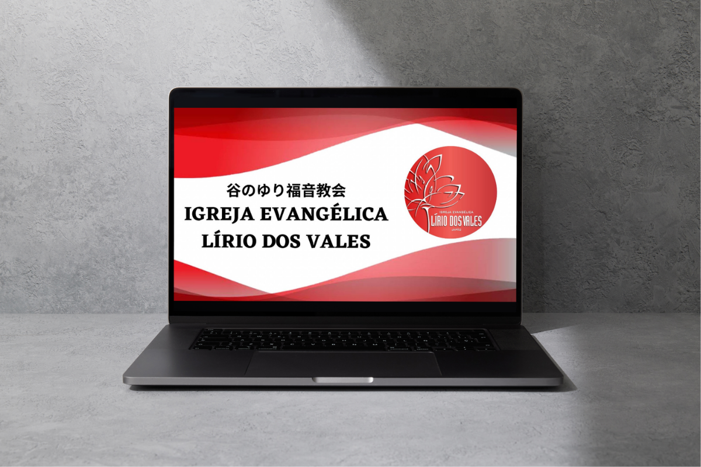
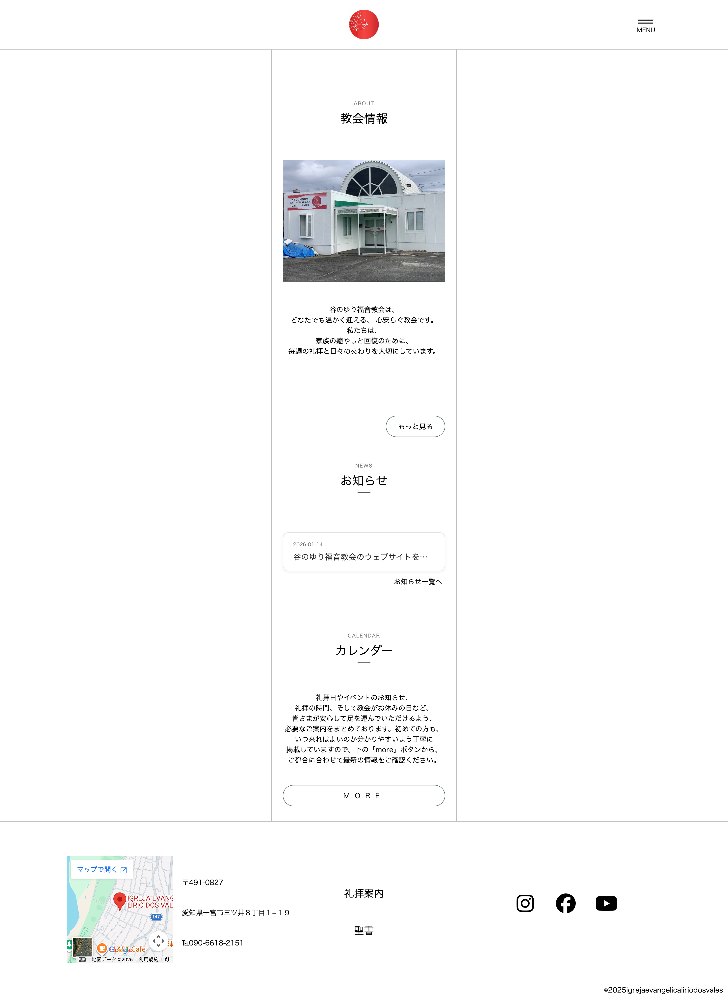
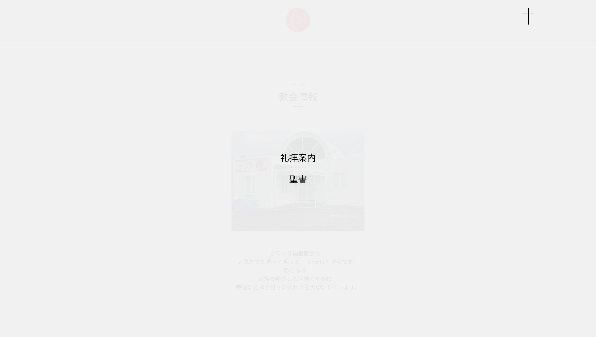
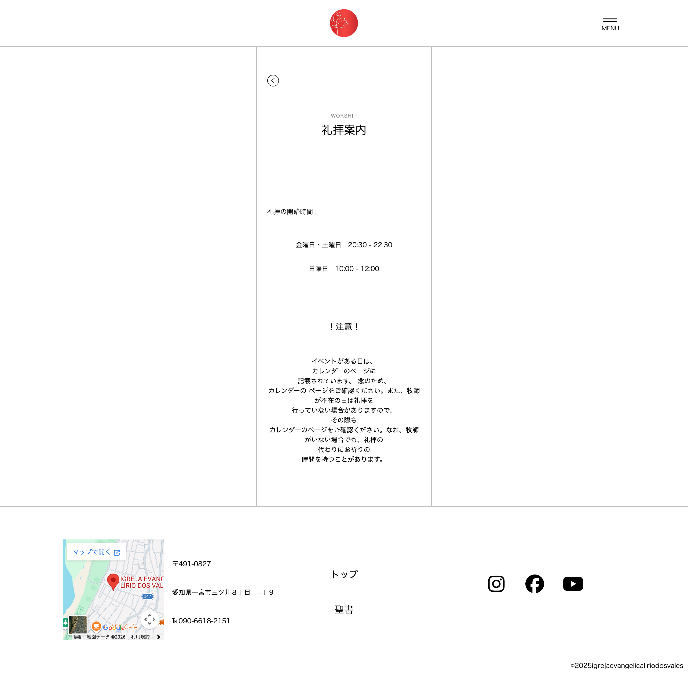

教会サイト



Overview
本制作は、「谷のゆり福音教会」のWebサイト制作をテーマとした進級制作作品です。 教会の情報を分かりやすく伝えることに加え、初めて訪れる方や高齢の方でも安心して利用できるサイトを目指して制作しました。 クライアントへのヒアリングを通して要望を整理し、情報設計・デザイン・実装まで一貫して行っています。 ユーザーにとっての使いやすさと、教会としての雰囲気表現の両立を意識したWebサイトです。
Purpose
教会は、初めて訪れる人にとって心理的なハードルが高く感じられる場合があります。 そのため本制作では、「安心してアクセスできる入口」となるようなWebサイトを目指しました。 クライアントヒアリングでは、以下の要望が挙げられました。 ・礼拝時間やお知らせを分かりやすく伝えたい ・高齢の方や初めての方でも見やすいサイトにしたい ・スマートフォンで見やすいスマホファーストの構成にしたい さらに、ヒアリングを進める中で以下のニーズも明確になりました。 ・教会らしさをデザインで表現したい ・更新作業を簡単に行えるようにしたい ・神様との出会いを求めている人のためのサイトにしたい これらの要望を踏まえ、「誰にとっても分かりやすく、安心して閲覧できる教会サイト」をコンセプトに設計しました。
Target
・教会に興味がある方
・地域住民や近隣の方
・初めて教会を訪れる方
・高齢の方
・神様との出会いを求めている方
Design
本サイトでは、スマホファースト設計を採用し、誰でも見やすく使いやすいデザインを意識しました。 クライアントの要望である「スマホファーストの構成」と「教会らしさ」を両立させるため、以下の点を工夫しています。 ・白を基調とした清潔感のある配色 ・余白を活かしたシンプルで読みやすいレイアウト ・写真を活かし、教会の雰囲気が伝わる構成 ・直感的に操作できるシンプルなナビゲーション さらに、細部の表現として、ハンバーガーメニューの開閉ボタンには一般的な「×」ではなく十字架のモチーフを採用し、教会らしい印象を視覚的に表現しました。
Information Architecture
ユーザーが迷わず情報にたどり着けるよう、コンテンツはシンプルに整理しました。 礼拝時間やお知らせといった重要な情報は視認しやすい位置に配置し、スクロールに沿って自然に理解できる構成にしています。 また、スマートフォンでの閲覧を前提とした設計により、片手でも操作しやすく、直感的に使える導線を意識しました。
microCMSについて
CMSにはmicroCMSを採用しました。 クライアントから「更新作業を簡単に行いたい」という要望があったため、 お知らせの管理がしやすく、直感的に操作できる点を評価しています。 また、自身としてはこれまでWordPressのみ使用していましたが、microCMSを導入したことで、新しいCMSに触れる良い機会となり、技術的な幅を広げることができました。
Reflection
本制作では、クライアントである教会の思いを大切にし、自分の表現よりも「神様との出会いを求める人の視点」を第一に考えて制作しました。 ヒアリングを通して考えを共有し、一つの方向に向かって制作できた経験は、今後の制作においても非常に貴重なものとなりました。 ユーザー視点を重視した設計や、目的に沿ったデザインの重要性を改めて実感することができました。